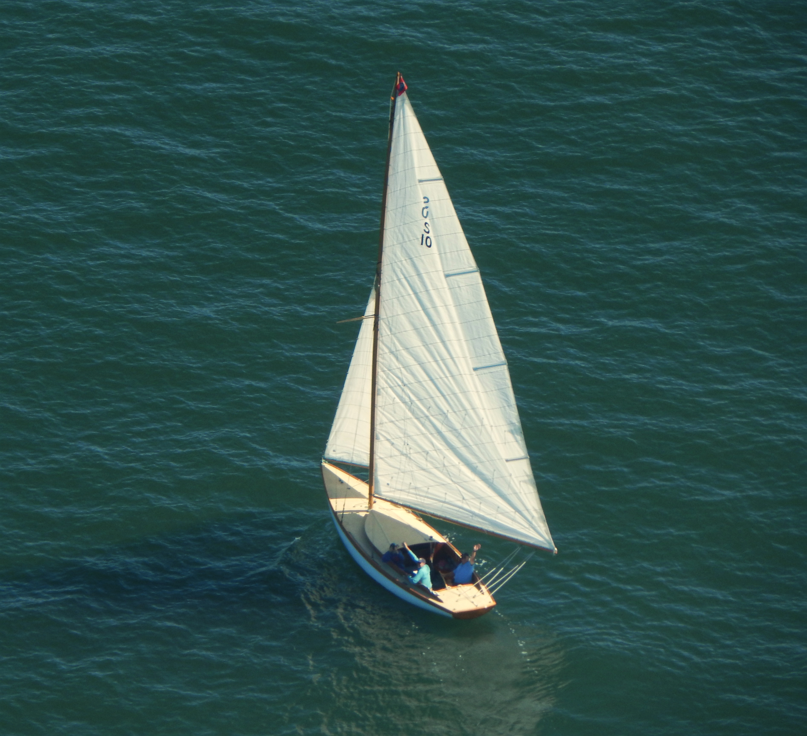
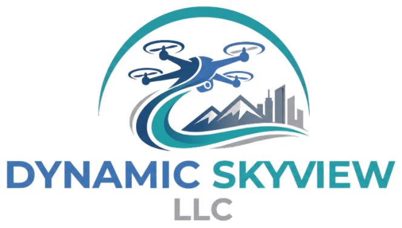

Recent Work
A selection of aerial perspectives, ranging from architectural facility showcases to dynamic marine operations at the Port Jefferson Yacht Club.






Precision Aerial Photography & Commercial Operations
Hi, I'm Ben Hubbard. My roots in aviation run deep here on Long Island. I grew up in Hauppauge and earned my private pilot's license at Brookhaven Airport in the summer of 2000 at just 19 years old. I went on to earn my Bachelor's Degree in Aeronautical Science from Embry-Riddle Aeronautical University in Daytona Beach, Florida.
After returning to New York, I spent several years working as a Certified Flight Instructor at both Brookhaven and Islip/MacArthur Airports. In 2012, I became a business partner in a local flight school, where I spent the next thirteen years managing and running daily flight operations. Throughout my career in manned aviation, I frequently flew alongside aerial photographers, giving me hands-on experience from both behind the flight controls and behind the camera lens.
In 2025, I transitioned that lifetime of airspace expertise into the unmanned sector, earning my FAA Part 107 Commercial sUAS certification and founding Dynamic Skyview, LLC.
Today, I specialize in precision aerial drone photography and videography. By combining decades of strict aviation safety standards with a keen eye for visual detail, I provide high-resolution, commercial-grade UAS services tailored directly to your project's unique needs.
A selection of aerial perspectives, ranging from architectural facility showcases to dynamic marine operations at the Port Jefferson Yacht Club.

Operations are conducted using the DJI Air 2s. By utilizing a professional-grade platform equipped with a massive 1-inch CMOS sensor, I can deliver exceptional clarity, dynamic range, and color accuracy for every project.
Captures significantly more light than standard commercial drones. This translates to stunning low-light performance and incredible dynamic range, ensuring your real estate or facility looks brilliant in a wide range of ligting conditions.
Shooting in ultra-high resolution with a 10-bit color profile (capturing over 1 billion colors) provides true broadcast-quality footage. This gives us immense flexibility in post-production to professionally color-grade the final video deliverables.
Produces massive, crystal-clear images. Whether we are capturing wide-angle real estate showcase imagery or conducting close-quarter structural inspections, you can zoom in without losing critical detail.
Utilizing high-end FocusTrack systems, the aircraft maintains silky-smooth camera framing on moving subjects. This precision is absolutely essential for capturing dynamic, perfectly composed action shots of both static and moving subjects.
Ready to elevate your project? Reach out directly or fill out the form below.
Ben Hubbard
Part 107 Remote Pilot
Phone: (631) 346-0774
Email: ben@dynamicskyview.com